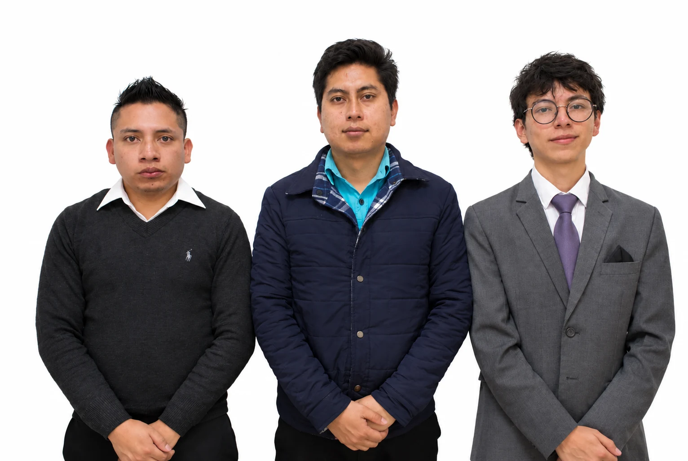

If you need to build your system
We map the processes included and draft the instruments and procedures your operations need.
LOPDP IMPLEMENTATION · ECUADOR
Implement Ecuador’s Organic Law on Personal Data Protection (LOPDP) with documents, procedures and responsibilities your team can apply when handling data on employees, clients and providers.
Same-business-day response.
We start with a free questionnaire or 20-minute call to guide the scope and the proposal.
YOUR PROJECT / WHAT STAYS IN YOUR HANDS
Within the contracted scope. Reference timeline: 8–12 business days from the start, depending on scope and timely information. Complex projects have their own schedule.
Two cases announced by the SPDP in December 2025:
LigaPro · USD 259,644.01
Fan ID app.
FEF · USD 194,856.16
Fan FEF app.
The authority reported serious infringements due to insufficient measures for data processing. These are specific cases, not an estimate of a fine for your organization. Official SPDP source · 1 December 2025
THE EXPERIENCE OF ONE FIRM
Clients of the firm across different legal services. The featured cases explain the scope of the data protection work.
PROJECT DELIVERABLES
We organize how you use data on employees, clients and providers: which documents you need, who must act and how to handle requests or incidents.
The reference scope includes 20 to 35 documents and instruments adapted to your operations. We define the number and content when we review your needs; some may be combined into a single document.
Explore three parts of your delivery.
WHAT YOU RECEIVE
Policies and proceduresRules adapted to your operations
Records and matricesInformation organized for review
Master folder and indexDeliverables and annual review calendar
Editable in Word and Excel. Yours to keep. The calendar guides follow-up; periodic reviews are agreed in the proposal. The 30 days included cover questions and adjustments within the contracted scope.
WHO DOES WHAT
Review how personnel files are handled.
Coordinate the review of contracts with providers.
Review access and backups according to the recommendations.
Actions and owners defined with your team.
HOW YOU START USING IT
Illustrative examples of the delivery. The proposal confirms the instruments and activities of your project.
We review how you collect, use, share and retain personal data. We identify what is missing and agree on a plan with clear priorities.
We prepare or update the documents your organization needs, based on how it uses data and the applicable obligations.
We work with the areas that use the information to define procedures and coordinate the measures included in the project.
We explain responsibilities by area and support the application of the programme.
We include 30 days of support at no extra cost from document delivery to answer questions and make adjustments within the contracted scope.
New needs, later periodic reviews and the Data Protection Officer service are agreed separately.
The proposal defines the technical review your organization needs. When it includes the eleven-area, 43-control format, we review access, devices, accounts and backups and deliver a matrix of findings and prioritized recommendations.
We coordinate the review with your IT lead. Carrying out the corrections is assigned to the relevant areas and providers, according to the agreed scope.
Penetration testing, digital forensics and configuration of devices or systems are quoted separately.
Governance and records: data and systems map, roles, record of processing activities and privacy-by-design criteria.
People and channels: notices, legal bases, rights, retention, communications and access rules.
Providers and data flows: the role of each provider, processing mandates, contracts and analysis of international transfers depending on the operation.
Risks and response: methodology, measures, impact assessment where appropriate and procedures for incidents and authority requests.
Application and evidence: owners, guides by area, training, master folder and calendar.
Reference map: the proposal confirms the instruments, number of documents, DPIA and technical review. Not all projects require the same documents.
WE START FROM WHAT YOU REALLY HAVE
We map the processes included and draft the instruments and procedures your operations need.
We review content, application and evidence. We define whether a prior audit is needed and what regularization work applies, making use of whatever is useful.
The proposal identifies which work is assessment or audit, what is implemented and who carries it out. It does not assume redoing everything or automatically include a full audit.
Experience in practice
Two TempoLegal experiences in implementing and supporting personal data protection.
Business group · Logistics
The relationship with the group also covers corporate, contractual and employment matters. That continuity makes it easier to understand its operations and coordinate the legal work.
Read its president’s experienceHealthcare · Patient information
The support includes programme follow-up and handling of authority requests, coordinated from Quito according to the needs of the service.
How we work
Reference schedule of 8 to 12 business days for the agreed scope, with joint review and training.
Days 1 to 2
Kick-off meeting to understand your activity, review the information available and agree on what each area must provide.
Days 3 to 7
We prepare the agreed documents, procedures and other instruments, with the participation of the areas involved.
Days 8 to 12
Joint review, training and delivery in Word and Excel. From document delivery, you have 30 days at no extra cost for questions and adjustments within the contracted scope.
The timeline runs from the kick-off meeting and depends on timely delivery of information. Projects that require audits, extensive regularization or specific impact assessments have their own schedule, confirmed in the proposal.
The agreed documents and instruments, joint review, training and 30 days of support within the contracted scope.
A contact person, timely information and the participation of the areas to review and validate. TempoLegal coordinates the process.
DPO, later periodic reviews and additional technical work. Your proposal confirms deliverables, timeline and fees before we start.
Existing documents, a list of processes and systems, contracts with providers and a contact for each area involved. We coordinate interviews and reviews with information relevant to the scope.
We do not ask for passwords. To review configurations or evidence, we agree on a controlled form of access with your technical lead.
TECHNOLOGY TO SUPPORT FOLLOW-UP

CumpliDatos is TempoLegal’s platform for organizing data protection tasks and following up on work with your organization.
Included at no extra cost while you keep the DPO service with TempoLegal.
Ask about the DPO service with CumpliDatosOrganize the workIdentify tasks, responsible people and dates.
Track progressReview what is missing and coordinate each area’s actions.
Gather evidenceKeep together the records and documents supporting the work.
It supports your team and the DPO. It does not replace professional judgment or your organization’s responsibilities, and does not by itself guarantee legal compliance.
The people behind the work
The legal team coordinates the project and explains to each area what it must provide. The IT specialists take part according to the contracted technical scope. If you hire a DPO, their advisory and oversight duties are kept separate from execution.
Meet the whole team
Founding partner
Corporate law · Data protectionSenior lawyer
Data protection · Regulatory compliance
Coordinated legal and technical work
Review of access, devices, accounts and backups, in coordination with the relevant areas of your organization.
Our clients, in their own words
Client experiences across different TempoLegal services.
Trust in the firm
I received clear, personal advice; the team understood my needs, explained each step of the process and was available to answer my questions. Beyond their legal knowledge, I especially valued their commitment and the personalized attention throughout the process.
Business experience
TempoLegal has supported us for years on employment, corporate, contractual and personal data protection matters. They know how the group works, so when a problem comes up we can go straight to what matters.
We have worked with Juan Alberto Gómez and the TempoLegal team on contracts and corporate matters. What I appreciate is being able to raise a problem with confidence and receive a clear opinion, designed for what the company really needs.
More about the firm: Firm magazine (Spanish) · PDF. Issue of 15 October 2026.
AFTER IMPLEMENTATION
Implementation organizes the project’s documents, procedures and measures. The Data Protection Officer (DPD or DPO) advises and oversees independently. If you need both services, we coordinate their duties and owners.
Your team applies and maintains the measures. If you need an external DPO, we define a separate engagement for independent advice and oversight.
In Ecuador the role is called DPD (Delegado de Protección de Datos); DPO stands for Data Protection Officer. It is hired separately: it is not automatically included in the implementation.
Explore the external DPO service · See all the practice’s servicesThe DPO proposal specifies products, reports, review frequency and training. If it includes an audit or an annual report, it identifies who carries them out and how independence is preserved. It does not mean unlimited support or automatic technical execution.
RISKS WORTH ADDRESSING
Non-compliance can lead to corrective measures and sanctions. Knowing the obligations and documenting how they are met allows you to manage the risk with information.
Private entities and public companies
0,1 % a 0,7 %
0,7 % a 1 %
Of the turnover for the financial year immediately preceding the one in which the fine is imposed. It is not calculated on profit. The SPDP determines the sanction through the corresponding procedure and applies proportionality criteria.
For public servants or officials, the law provides for 1 to 10 unified basic salaries for minor infringements and 10 to 20 for serious ones. Public companies follow the percentage ranges shown above.
Implementation must match the real operation: documents, processes, measures and evidence. We define the priorities and the scope of the work; hiring it does not guarantee full compliance or the absence of sanctions.
DECIDE WITH INFORMATION
By reviewing how you collect, use, share and retain personal data, and which instruments you have. With that information we define the processes included, priorities and the participation of each area. The preliminary consultation guides the proposal; the detailed mapping is part of the contracted service.
The reference scope includes between 20 and 35 documents and instruments adapted to your operations, some combined with each other. The proposal confirms which ones you need: policies, notices, contracts, records, matrices and procedures as appropriate. They are delivered editable in Word and Excel and you own them.
The reference timeline is 8 to 12 business days from the kick-off meeting, subject to the agreed scope and timely delivery of information. Audits, extensive regularization or specific impact assessments may require their own schedule, confirmed in the proposal.
A contact person, the requested information and the participation of the areas to review and validate your operations. TempoLegal coordinates the process; decisions and the application of measures belong to the organization.
Questions and adjustments within the contracted scope, at no extra cost from document delivery. They do not include new needs, indefinite periodic reviews or the DPO service, which are agreed separately.
Implementation and the DPO are different services. If you need a DPO, the proposal identifies how they are hired, their duties and the independence measures. Appointing one does not replace implementation or your organization’s responsibility.
The proposal defines the non-intrusive technical review and the risk work. When a DPIA is required, its development is expressly specified. Penetration testing, digital forensics, configuration and carrying out corrections require an agreed scope; they are not included automatically.
No. They must match the real processing operations and be accompanied by applicable measures and actions. The service delivers the contracted work; it does not certify full compliance or guarantee the absence of sanctions.
Tell us your activity, the entities involved, previous work and your main need. The free preliminary consultation allows us to prepare a proposal with deliverables, schedule and fees.
Not automatically. If you already have documentation or an operation that requires an in-depth review, we can start with a legal and technical audit and then scope the regularization. The proposal identifies its deliverables, schedule and fees before each piece of work begins.
We review who processes the data and for what purpose, the instructions, contracts, access and international transfers. Hosting outside the country does not by itself define the whole legal relationship. Depending on the operation, the proposal includes the necessary analysis and documentation; it does not mean changing platforms without an assessment.
GUIDANCE TOOLS · NO SIGN-UP
Organize your questions before talking to our team. These tools do not certify compliance or replace a legal review.
Identify aspects worth reviewing and set your priorities.
Open the self-assessmentExplore appointment criteria and large-scale processing.
Review DPO and large scaleRanges for private entities and public companies. It does not attribute an infringement or predict a sanction.
Open the fine simulatorLet’s talk about your organization
Tell us about your activity, how many entities are involved and what previous work you have. With that information we scope your project and prepare a proposal.
We start with a questionnaire or a 20-minute call, free of charge and with no obligation to hire us. With that information, we prepare a proposal with deliverables, timeline and fees.